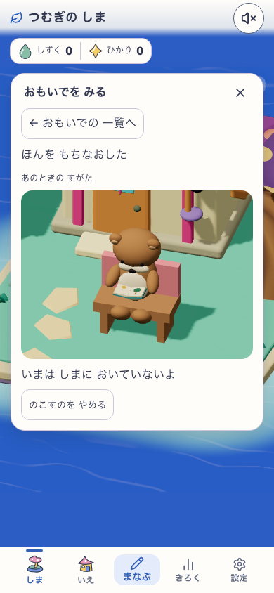
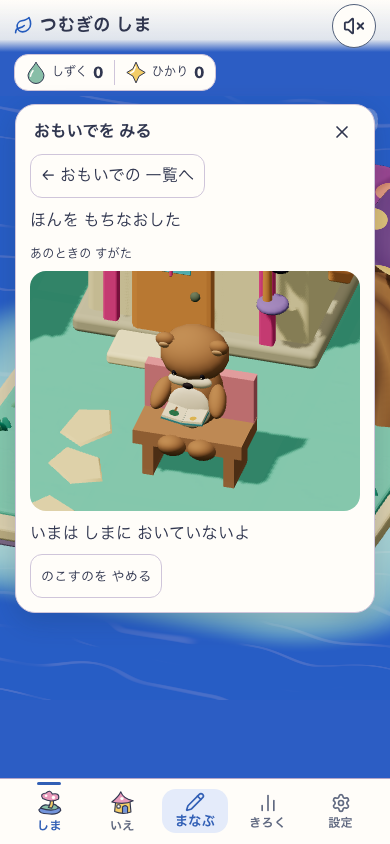
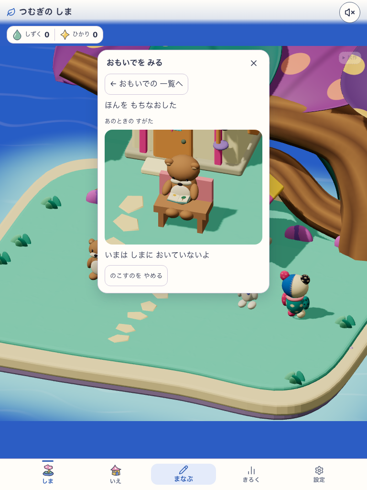
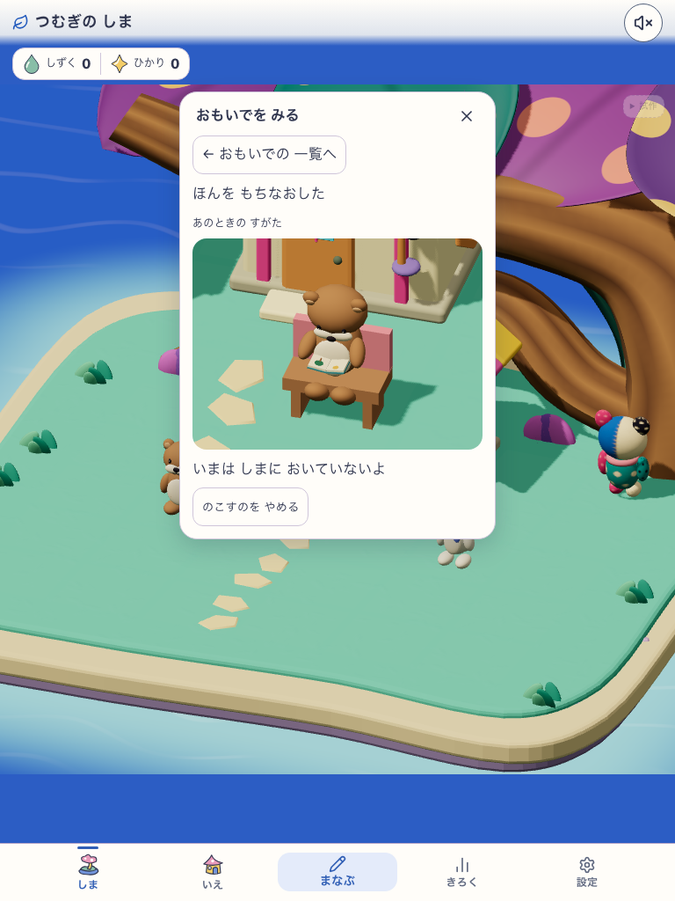
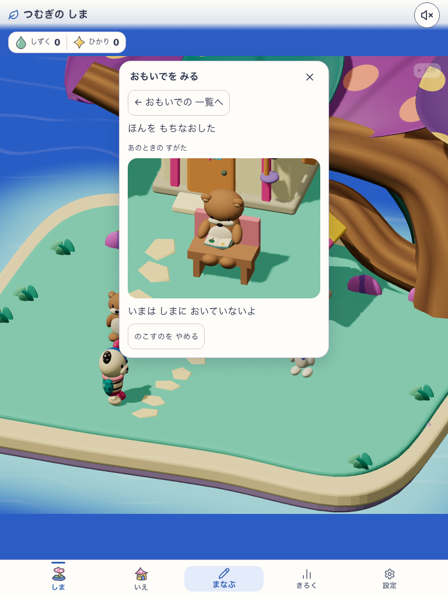

canopy-dots-c3-v1 / reading-book-v1 / actual build development-local.
Source 74514aaad4483288a65ec4e85e8c576a832fcf64d813fad4e2762c37fea6bfec.
Explicit simulated snapshot, actual rendered evidence and app save/replay. NOT natural X3 occurrence.
Visual C3 HOLD / Human N=0 / scoped runtime PASS. C3 characters are NOT character designs.




